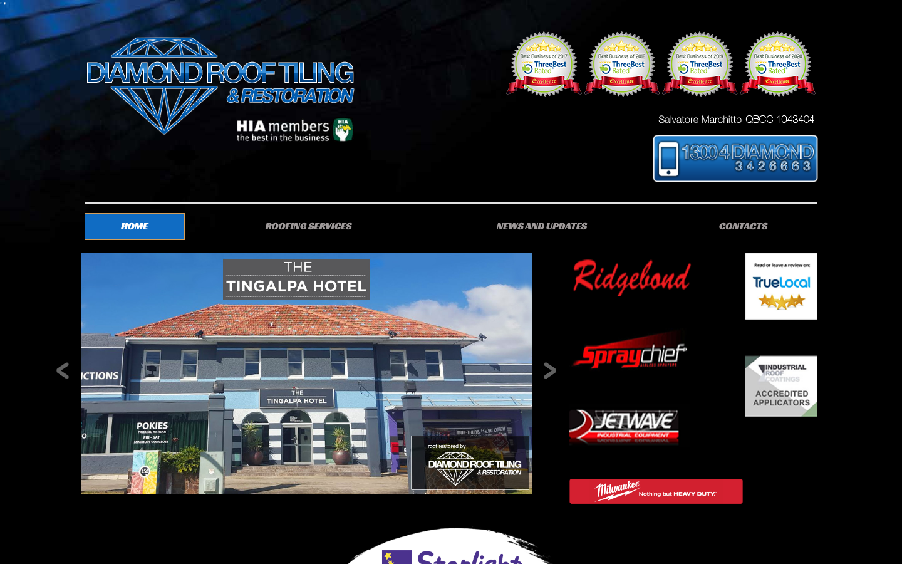
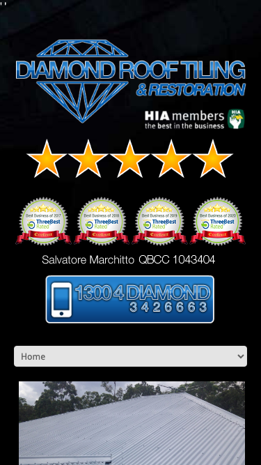

55/100 · strong_redesign · 行业：roofing · 地区：Brisbane · Google 评价：4.9★ （65 条）
投入分级： A 全攻 — 完整 OD redesign +
个性化销售流程
触发依据： - strong_redesign + 65 评论 + 4.9★ - 评论 trust signal 强
产品档位： T2 多页站
建议报价： 一次性 $3-6K
下一步行动： 跑完整 Open Design redesign brief + 个性化 cold email（突出 audit 中最强论据）+ 报告/视频外发 + 3 次跟进。报价主推 多页站。
审计结论： audit_score=55 → strong_redesign · weakest: seo 31, technical 40 · fired: no_https · 2 critical issues
已触发的 hard triggers： no_https
independent_http_site

The website relies on a black background with low-contrast text and 1990s-style bevel effects, making it difficult for users to read content or trust the business’s modernity.
新鲜度 2/10 · 信任度 4/10 ·
转化准备度 3/10 · 设计年代
severely_outdated
值得保留的优点： - The business has strong trust signals (HIA membership, QBCC license number, multiple awards) that are valuable assets. - The phone number is a local 1300 number, which is good for trust in Australia. - The hero image shows a real project (Tingalpa Hotel), which provides social proof.
Customers consistently praise Sam and his team for their professionalism, honesty, and high-quality restoration work that visibly improves roof condition and energy efficiency. The reviews highlight a personal touch, with the owner often working on-site, and emphasize trustworthiness through honest advice regarding necessary repairs.
一致夸赞：
honest and transparent advice ·
high-quality craftsmanship ·
professional and friendly team ·
owner involvement on-site ·
visible aesthetic improvement
可直接放上 redesign 后网站的 quote：
“Sam is honest and advised only repairs is necessary. The quote is reasonable and his team did amazing work.” — Jack, ★★★★★
放哪：Builds trust by demonstrating honesty and value for money in the testimonials section
“Our roof is looking like new, letting less heat in on these hot summer days, and I’ve received compliments from my neighbours.” — Pants, ★★★★★
放哪：Highlights functional benefits (energy efficiency) and social proof for the hero section
“We were impressed that you were not only the quote person but worked on the roof throughout the restoration process.” — Cheryl, ★★★★★
放哪：Emphasizes owner accountability and hands-on leadership for the ‘About Us’ or trust signals section
“The solar guy also remarked that the quality of the repairs is excellent during the solar installation.” — Jack, ★★★★★
放哪：Provides third-party validation of quality for the services page
技术事实
http only
普通话翻译
你的网站没有 HTTPS — 浏览器会在地址栏显示「不安全」标记，部分浏览器（Chrome / Firefox）甚至会弹出全屏警告挡住页面。
对客户的影响
Google 早在 2018 年起把 HTTPS 列为搜索排名因素，没有 HTTPS 直接拉低自然搜索可见度；且超过 80% 的访客看到「不安全」标识会立刻关掉。对你这种 65 条 Google 评价积累起来的口碑来说，访客在网址栏就被劝退，等于浪费了所有 GBP 流量。
技术事实
phone hidden below fold or missing
普通话翻译
电话号码在第一屏看不到 — 客户必须滚动才能找到怎么联系你。
对客户的影响
本地服务客户 60-70% 倾向打电话沟通（不是填表单）。电话号没在第一屏 = 这部分客户里很多人会直接关掉去搜下一家。这是最便宜的转化优化之一。
技术事实
The entire page uses a pure black background (#000000) with grey or white text that has low contrast. The navigation menu text (‘ROOFING SERVICES’, ‘NEWS AND UPDATES’) is barely visible against the black.
普通话翻译
网站背景是黑色的，上面的字很难看清。就像在漆黑的房间里找东西一样，用户根本看不清你在卖什么服务。
对客户的影响
用户在网站上停留的时间通常只有几秒钟。如果第一眼看不清文字，他们会立刻关闭页面。这直接导致你失去了70%以上的潜在客户，因为他们根本不知道你能做什么。
正确长啥样
A white or very light grey background with dark grey or black text. Navigation items should be clearly legible without squinting.
Redesign 怎么改
Invert the color scheme: use a white background for the body and navigation, with dark text for maximum readability.
技术事实
The menu items ‘ROOFING SERVICES’, ‘NEWS AND UPDATES’, and ‘CONTACTS’ are in a light grey color on a black background, making them nearly invisible.
普通话翻译
导航菜单的字太淡了，几乎看不见。用户想点菜单看看你有什么服务，但根本看不清字。
对客户的影响
如果用户找不到服务页面，他们就不会联系你。这直接导致转化率下降，因为用户无法完成他们的目标。
正确长啥样
Navigation text should be dark on a light background, or white on a dark background with high contrast.
Redesign 怎么改
Change navigation text color to white or dark grey depending on the background, ensuring a contrast ratio of at least 4.5:1.
技术事实
title=‘## Get a Free Quote’ contains-name=false contains-niche=false
普通话翻译
你网站的浏览器标签 title 没把业务名字 + 服务关键词写清楚（比如该写「Diamond Roof Tiling & Restoration - roofing Brisbane」，但目前是泛泛一句）。
对客户的影响
Google 搜索结果里展示的就是这个 title。写不清楚 = 排名靠后 + 即使排上来客户也不知道是不是匹配的服务。SEO 最便宜的修复，但很多本地企业完全没做。
技术事实
0tags
普通话翻译
页面要么没有 H1 标题（搜索引擎无法理解页面主旨），要么有多个 H1（搜索引擎不知道哪个是主题）。
对客户的影响
H1 是搜索引擎判断页面主题最权威的信号。写错或缺失 = 关键词排名拉低；同一页面同样的内容，H1 写对的可以排到前 3 页，写不对的可能挂在第 7 页。
技术事实
no LocalBusiness JSON-LD
普通话翻译
网站没有 LocalBusiness JSON-LD 结构化数据（让 Google / AI 知道你是本地企业、地址、电话、营业时间的标准格式）。
对客户的影响
Google「附近的服务」「Knowledge Panel」「AI Overview」都依赖这类结构化数据。没有 = 即使排名上去也不会出现在右侧 Knowledge Panel 或地图卡片里 — 错失高转化的展示位。AI agent / ChatGPT 引用本地商家时也是基于这些数据。
技术事实
The phone number button (‘1300 4 DIAMOND’) and the main logo use heavy 3D bevels, drop shadows, and gradients that look like they were designed in 1998.
普通话翻译
网站上的按钮和Logo看起来像是20年前的老式设计，有那种立体的边框和阴影。这让网站显得很过时，不专业。
对客户的影响
客户会通过网站判断你的技术水平。过时的设计会让客户觉得你的施工技术也过时了，从而选择竞争对手。这会让你失去那些注重质量的客户。
正确长啥样
Flat design elements. The phone button should be a solid color (e.g., blue or orange) with white text, no 3D borders or shadows.
Redesign 怎么改
Remove all bevels, gradients, and drop shadows. Use flat, solid colors for buttons and logos to look current.
技术事实
The top section is packed with the logo, four award badges, a license number, and a phone button all crammed into one area without clear hierarchy.
普通话翻译
网页顶部堆了太多东西：Logo、四个奖章、电话号码挤在一起。用户不知道该先看哪里，找不到最重要的电话号码。
对客户的影响
在手机上，用户需要快速找到联系方式。如果电话按钮不明显，用户会直接离开。这会导致你失去那些急需屋顶维修的客户。
正确长啥样
A clean header with the logo on the left and a prominent ‘Call Now’ button on the right. Awards can be moved to a footer or a dedicated ‘Trust’ section.
Redesign 怎么改
Simplify the header. Place the logo on the left, navigation in the center, and a large, high-contrast phone button on the right.
我们前面那段「慢速 4G 加载视频」是我们这边的实验室结果。这一段是 Google 自己对你网站打的分，包括过去 28 天 真实访客的网络体验数据（CRUX field data）。
Lighthouse 分数（实验室）：
| 维度 | 分数 |
|---|---|
| 性能 (Performance) | 35/100 |
| 可访问性 (Accessibility) | 73/100 |
| 最佳实践 (Best Practices) | 65/100 |
| SEO | 85/100 |
Lab 关键指标： LCP 48.6s · FCP
4.9s · CLS 0.024 · TBT 898ms
Google 建议的优化项（按节省时间排序，前 5）：
Lighthouse 分数： Performance 34 · A11y 77 · Best Practices 65 · SEO 77
客户最常担心的问题：「我重做网站，会不会丢掉 Google 排名？」这一段直接回答。
客户能不能 方便地 把信息留下来 =
直接的转化路径。这一段审视所有 <form> 元素的可用性 +
防 spam 配置。
已部署的人机验证： - reCAPTCHA v2 (visible “I’m not a robot”) — 高摩擦
Audit 总结：
none）strong (SPF + DKIM
+ DMARC 齐全)从网站源码识别出来的工具，能帮我们判断这位客户的数字成熟度。
数字成熟度打分： 2 / 6 （中 — 已有基础设施，缺少深度运营）
客户可能有数月 / 数年的历史数据 + 广告投放受众 sit 在这些 ID 上面。重做时必须用同一套 ID 重新接进新网站，否则等于清零所有累积。
我们 redesign 交付清单会把这些列为「必须 setup 项」。
关键发现：客户网站还装着 Universal Analytics，这套工具 Google 已于 2023 年 7 月停止收集数据。也就是说，他们至少 2 年没有看过任何真实的网站访客数据。这是销售切入的强角度。
GEO = Generative Engine Optimization。ChatGPT、Perplexity、Google AI Overviews 这些 AI 搜索产品不像传统搜索引擎那样按”关键词排名”工作，它们直接抓取结构化数据并把答案合成给用户。如果你的网站在 AI 抓取这一块做得不到位，等于在生成式搜索时代隐身。
AI 可发现性总分： 20 / 100 — AI agent / ChatGPT 几乎无法准确引用此网站 — 在生成式搜索时代等于隐身
semantic_landmarks — 4 semantic landmarks
present: <nav, <header, <footer, <sectionjsonld_at_least_one — 1 JSON-LD block(s)
detected on pagellms_txt_present (5 分) — no /llms.txt at
standard pathai_bot_robots_policy (5 分) — robots.txt has no
explicit policy for AI crawlers (GPTBot/ClaudeBot/etc)localbusiness_schema (15 分) — no LocalBusiness
or Organization JSON-LDservice_schema (10 分) — no Service JSON-LDfaqpage_schema (10 分) — no FAQPage JSON-LD
(loses AI Overview / featured snippet eligibility)aggregaterating_schema (5 分) — no
AggregateRating JSON-LD (★ rating not shown in search snippets)breadcrumb_schema (5 分) — no BreadcrumbList
JSON-LDfaq_qa_pattern (10 分) — 0 question-style
heading(s) found (Q&A format helps AI extraction)eeat_business_credentials (10 分) — only 0/4
credentials found — need ≥2 of: ABN, license/QBCC, years-in-business,
insuranceeeat_warranty_trust (5 分) — no
warranty/guarantee in copy销售切入： 「ChatGPT 现在每月 30 亿次搜索，本地服务用户问『Brisbane 哪家屋顶公司靠谱』，AI 回答时只引用结构化数据完整的网站。你目前在这个新阵地的得分是 20/100。」
注：这一段只给运营内部看，不进入客户报告。 用来判断这个 lead 是不是匹配我们「小网站 / 多批量 / 快上线」的产品定位。
small —
小型，符合我们标准产品包定位触发依据： - Google 评价 65 条（≥50，有规模基础） - 已部署 4 个分析 / pixel 工具（高数字成熟度）
redesign 是一次性收入。以下是基于这个客户当前现状自动识别的持续性服务包机会，可以在 redesign 提案签字时一并捆绑进去。
触发依据： 网站没有 blog 板块 — 没有内容营销基础设施，长尾 SEO 流量为零。
包内容： 每月 2 篇 SEO-optimized blog（800-1,200 字）+ 每季度 1 篇 case study（含 before/after 图）+ 关键词研究报告。
月度费用区间： $400-800/月
销售切入： 「ChatGPT 时代搜索引擎更偏爱有「专家深度内容」的网站。你目前的网站只有服务介绍页 — AI 可引用的素材几乎为零。」
-2026-05-11-v1ollama-qwen3.6-27b-nothinkGoogle Places Place Details · most_relevant